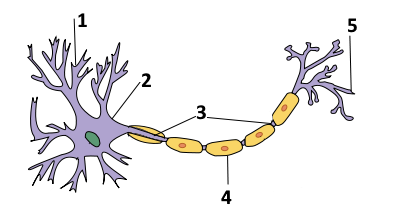

① Vom Reiz zur Reaktion
Stell dir vor: Du fährst mit dem Fahrrad zur Schule. Plötzlich springt ein Ball auf die Straße. Du bremst sofort. Was in deinem Körper passiert, bis du wirklich bremst, läuft in mehreren Schritten ab – der sogenannten Reiz-Reaktions-Kette.
Bring die folgenden Schritte in die richtige Reihenfolge: Tippe zuerst einen Schritt aus dem Kasten an, tippe dann auf ein freies Feld in der Kette. Ein bereits belegtes Feld erneut antippen gibt den Schritt wieder zurück in den Kasten.
② Reflex oder bewusste Reaktion?
Manche Reaktionen laufen blitzschnell und ohne Nachdenken ab – das sind Reflexe. Sie werden bereits im Rückenmark verarbeitet, das Gehirn ist nicht beteiligt. Andere Reaktionen sind bewusst: Das Signal wird erst im Gehirn verarbeitet und bewertet, bevor eine Reaktion erfolgt. Das kostet etwas mehr Zeit.
Ordne die Beispiele der passenden Kategorie zu: Tippe ein Beispiel an, tippe dann auf die passende Kategorie. Ein bereits einsortiertes Beispiel erneut antippen gibt es zurück in den Kasten.
Reflex
Bewusste Reaktion
Warum reagiert der Körper bei einem Reflex schneller als bei einer bewussten Reaktion? Formuliere eine Erklärung mit eigenen Worten.
Vergleiche deine Idee
Ein Torwart hält einen scharf geschossenen Elfmeter manchmal in Sekundenbruchteilen. Trotzdem zählt das nicht als Reflex. Warum nicht?
Vergleiche deine Idee
③ Bau der Nervenzelle – warum genau so gebaut?
Eine Nervenzelle (ein Neuron) ist kein zufälliges Gebilde – ihr Bau passt genau zu ihrer Aufgabe: Signale empfangen, weiterleiten und an die nächste Zelle übergeben.

Bild „nervenzelle.png" wurde hier nicht gefunden. Lege die Datei im gleichen Ordner wie diese HTML-Datei ab (mit den Zahlen 1–5 beschriftet) – dann erscheint sie automatisch an dieser Stelle.
Grundlage: „Neuron-no labels.png" von Quasar Jarosz, Wikimedia Commons, Lizenz CC BY-SA 3.0 – bearbeitet (Zahlen 1–5 ergänzt).
Ordne die Begriffe den Zahlen im Bild zu: Tippe einen Begriff an, tippe dann direkt auf das passende Feld in der Liste. Ein bereits ausgefülltes Feld erneut antippen macht die Zuordnung rückgängig.
Warum hat eine Nervenzelle meist viele Dendriten, aber nur ein Axon?
Tipp 1
Tipp 2
Denkanstoß
Warum können Axone extrem lang sein – manche über einen Meter (z. B. vom Rückenmark bis zum Fuß)?
Tipp 1
Tipp 2
Denkanstoß
Welchen Vorteil könnte die Isolierschicht (Schwann-Zellen) um das Axon haben?
Tipp 1
Tipp 2
Denkanstoß
④ Das elektrische Signal im Axon – und die Synapse
Man kann sich ein Axon vereinfacht wie ein Stromkabel vorstellen: Im Inneren wird die Erregung als kleine elektrische Spannungsänderung weitergeleitet – ähnlich wie Strom durch ein Kabel fließt. Die Isolierschicht (Schwann-Zellen) wirkt dabei wie die Kunststoffhülle eines Kabels. Am Ende des Axons liegt die Synapse – die Kontaktstelle zur nächsten Zelle. Wie die Übertragung dort genau funktioniert, klärt ihr in einer späteren Stunde; so viel vorab: Ganz genauso wie im Kabel-Inneren läuft es dort nicht ab.
Wahr oder falsch? Tippe für jede Aussage auf deine Einschätzung.
⑤ Kurz zusammengefasst
Tippe eine Karte an, um die Antwort zu sehen. Nochmal antippen dreht sie zurück.